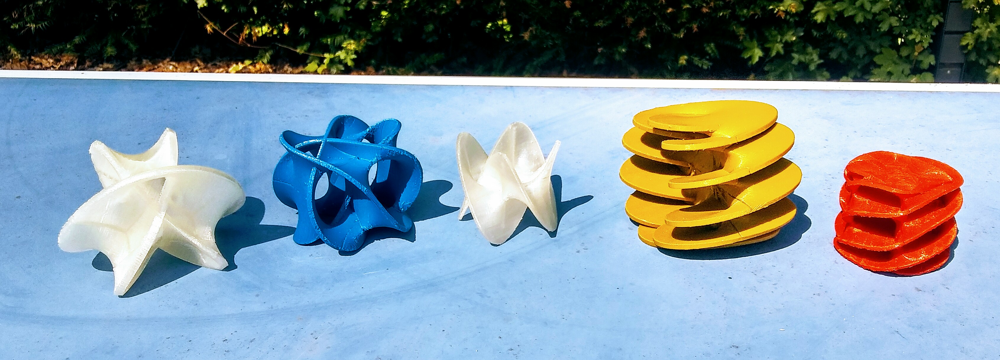

Heidelberg Experimental Geometry Lab (HEGL)

Als ein Mitglied von Geometry Labs United möchte HEGL durch gemeinschaftliches Experimentieren und Visualisieren das Forschen in der Mathematik unterstützen und eine Gemeinschaft von Mathematikerinnen und Mathematikern von Studierenden über Promovierenden zu Professorinnen und Professoren fördern.
HEGL ist nicht nur ein Raum auf dem Campus, sondern bietet auch eine Schnittstelle, die Studierende und Forscherinnen und Forscher; Mathematik und Visualisierung; und Forschung und Computerexperimente zusammenbringt.
HEGL ist ein Teil der Forschungsstelle Geometrie und Dynamik an der Universität Heidelberg und wird in Zusammenarbeit mit dem HITS (Heidelberger Institut für Theoretische Studien) aufgebaut.
Mitmachen!
Alle Studierenden und Forscherinnen und Forscher sind herzlich eingeladen, mitzumachen, indem Sie sich für ein Projekt eintragen oder ein neues vorschlagen, einfach mal zu den Öffnungszeiten im Lab vorbeikommen, das Seminar besuchen und mehr!
